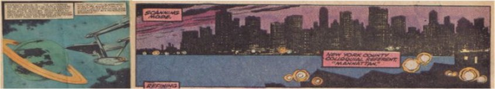
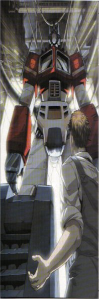

By looking at the value of page openings such as the example we have just looked at, it helps us to
put an edition of a comic book into historical context. The details and information within the comic/s all add to
what we can learn about individuals; the readership of the comic. In creating a prototype edition it is important to keep
this information, as without it the comic strip itself could be any other comic strip from any other time. Unless of course
this is what we are trying to achieve. While this information is important, if we were focusing on re-creating the
reading experience of a comic from say, ten decades ago, this information may still not be enough.
We can look
at the contents of past comics and we can gather information about a few select items of popular culture for that time, such
as a particular brand of candy, a popular toy, a popular game, for example. But there is other information which could be discovered
that can help to contextualize the reading experience:
- Family Income and Percentage of which Comics Cost
- Technology for the time
- Popular Culture
- Movies and Movie Stars
- Music
- Television and Television Stars
- National/International Events
- Wars
- Celebrations
- Discoveries
- Advertisments
- Art
- Products
- Media
- Magazines
- Newspapers
- Periodicals
Therefore if we take Star Trek from 1974 as an example we can take into account some of the points from above, and we
would be able to give users of a new edition of this comic book information and experiences that would help them put them
in the position of the 1974 reader. Such as the following:
The space race was won in 1969 by America making it to
the moon before Russia. The event was televised internationally giving everyone a chance to see close range what space and the moon
is like first hand. Star Trek at the time was a television series. The pilot episode of which went out nine years before hand in 1965, but
the series which would be recognised was first aired in 1966 with William Shatner starring as the captain of the Starship Enterprise. Its Moto:
"To Boldly Go Where No Man Has Gone Before". The comic book been based around these characters and ideals. Also at the time was the war in Vietnam,
although a cease fire had been called which was cause for new hope for American youths, and others worldwide alike. Richard Nixon resigns from the Whitehouse.
Dungeons and Dragons was released in January this year. India detonates its first nuclear weapon. Carrie is written by Steven King this year. October 30th saw
Muhammad Ali regain the world heavyweight boxing title in the "Rumble In The Jungle" against George Foreman. West Germany win the World Cup and the Miami Dolphins
win the Superbowl against the Minnesota Vikings.
Within a full edition we can allow users to see this detail through the use of multimedia and an interactive
timeline, or we could use any other number of methods to enrich the overall reading experience for the user.
As well as the historical context there is also further paratextual information which go towards making the comic book of past and
present, what it is. Binding - The binding of a comic book is an interesting feature, for it is nothing more than a slightly thicker paper with a glossy/matt
finish (depending on its age), and it is simply held onto the rest if the booklet with two staples along the spine. This is a remarkable feature of the comic for
so many are collected, and still available, but their condition is still almost perfect for such modest binding methods. Discovering the reasoning behind why they have kept/been kept
so well may be part of the jigsaw revealing the value of this artefact and can go some way to help us make a good digital edition. This goes for the cost of the paper used as well, as there
is nothing to suggest that the material making a comic book is particulary expensive or special, yet they remain in excellent condition.
Authorship - How important are the artists involved or the publishing companies producing the comic books in the kinship one feels with the comic.
In general what makes the reader keep coming back to a particular series of comics.